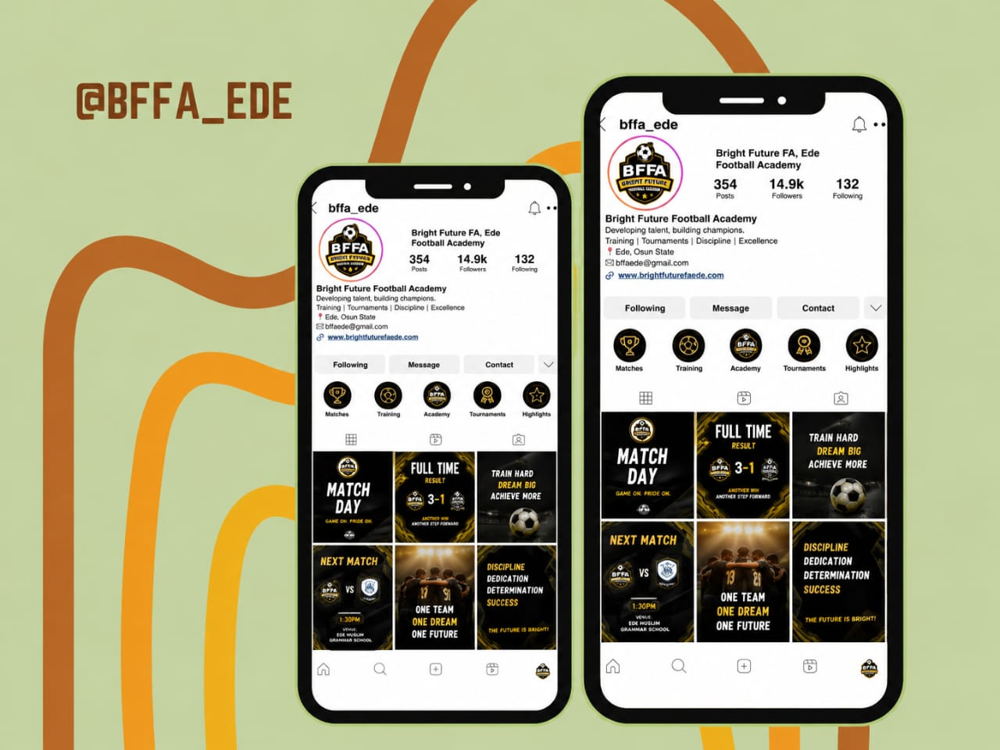

Bright Future Football Academy is a football and youth development organization whose digital communication involves more than simply publishing football activities.
My role combines public relations, media management, social media management, content creation, sports communication and community engagement to communicate the academy's activities, development journey and identity across multiple digital platforms.
This is one of my strongest practical experiences because the role goes beyond simply managing social media pages.
The academy needed a more structured way to communicate its football activities, competitions, achievements and development journey across its digital platforms.
I developed a more structured sports media and digital communication approach that combined social media management, public relations, content creation and community communication.
The content strategy combines sports communication, storytelling, publicity, community engagement and visual media.
I transformed the academy's communication from simply announcing football activities into a more structured sports media and storytelling system, covering match promotion, community engagement, player storytelling, visual branding and public relations.
Followers
Posts